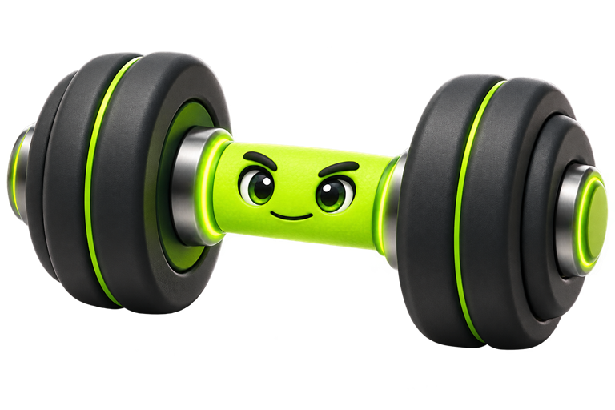
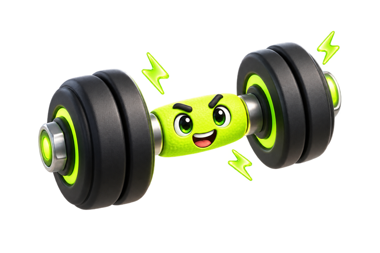

你好。我会先查找本机已审核知识，再回答训练、动作、营养与恢复问题。
EVIDENCE · TRAIN · REVIEW
把每一次训练，
练得更明白。
先看依据，再生成计划；完成每一组，留下可以复盘的记录。
—本机资料
0本机计划
0训练记录
YOUR PLAN
训练计划


今天想练什么？
先检索本机已审核知识，再由你选择的模型回答。
AI ADVISOR
本地检索
砺炼顾问
仅面向18岁以上健康成年人，不提供疼痛、伤病或康复建议。
本轮知识依据 0
OFFLINE KNOWLEDGE
本机知识库
包括已核验内容、专业草案、学术来源草案和经整理的创作者观点；每条资料都会显示审核状态。
TRAINING
训练
正常训练与健美备赛独立记录，互不混用。
CONTEST PREP
未制定
备赛指南
把减脂、训练、有氧、恢复、造型、Peak Week 和赛后恢复放进同一条可跟踪时间轴。AI 会结合你的本机档案和备赛现状生成初稿。
先看全流程安全指南
用七日均重、围度、照片和训练表现看趋势；只在连续趋势偏离时小幅调整，不靠单日体重追赶进度。
尽量保留熟悉动作和可恢复的训练刺激；有氧与步数逐步调整，避免同时大砍饮食和训练量。
固定记录睡眠、饥饿、疲劳、训练表现和饮食执行度。出现明显风险信号时停止自行推进并寻求专业评估。
说明水负荷、限水、控盐、出汗脱水与利尿剂为什么可能失效或让肌肉变扁。默认不主动脱水，保持熟悉且稳定的水钠。
提前练习强制动作、转体、舞台动线和呼吸；比赛日前完成报名、证件、服装、肤色、餐食与交通清单。
比赛不是计划终点。继续监测饮食、体重、训练、情绪与身体状态，按预先安排恢复日常节奏。
备赛资料库正在载入…
指南与论文草案会以“待复核”背景用于备赛 AI；创作者视频是待审核来源，不等于事实结论，也不会发送给 AI。
AI ANALYSIS
每周固定复盘
本计划包含待复核草案依据；相关内容已按保守背景使用，不代表已核验结论。
根据自身情况做 AI 分析
NORMAL TRAINING
正常训练
添加第一组后开始计时
0组
0动作
0kg 容量
REST TIMER
01:30
EXERCISES
动作库
HISTORY
训练历史
LOCAL PROFILE
我的
档案、计划和训练记录只保存在当前设备。
MODEL CONNECTION
本机安全存储我的模型 API
锁屏倒计时锁屏实时显示剩余休息时间，结束时通知并震动
知识包随应用版本更新